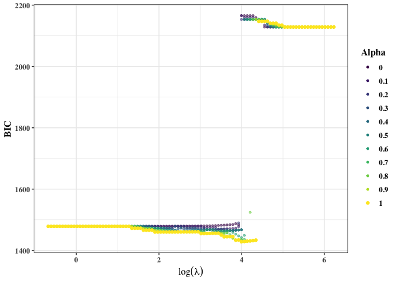
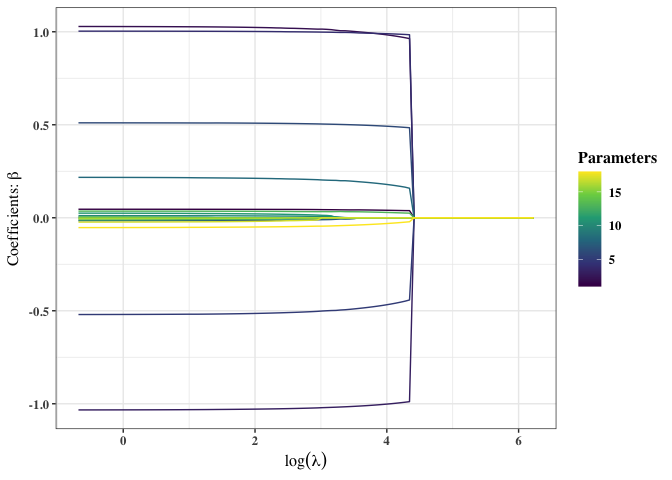
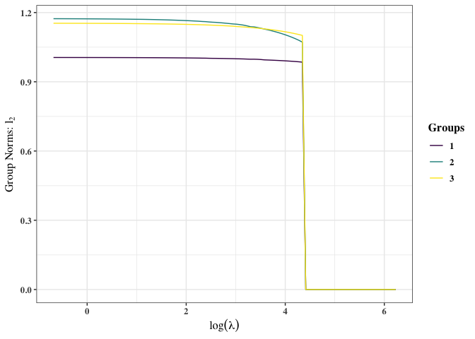
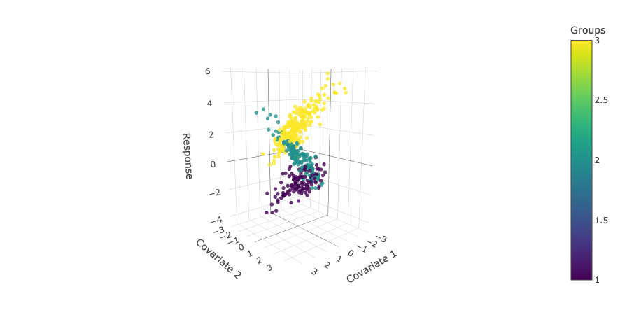
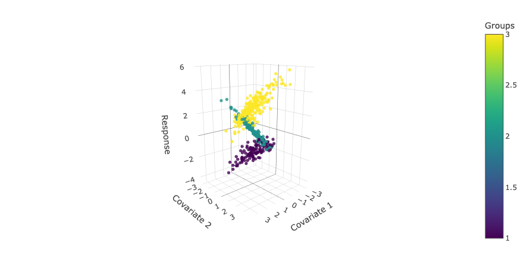

Overview
regMR provides a comprehensive framework for fitting regularized finite mixture regression models via an MM algorithm. The sparse group lasso (sgl) penalty is applied to parameter updates within the MM algorithm for variable selection with respect to groups and covariates. The package provides multiple functions for estimation and allows users to fit models over different lambda-alpha sgl penalties and group counts. There are four families of finite mixture regression models able to be fit: Gaussian, Poisson, Binomial, and Gamma. These are specified using the family argument in the three main functions the package contains, FMRM(), MM_Grid(), and MM(). The models can also be selected using different information criteria including the default Bayesian Information Criterion (BIC), group-structured Extended BIC (gEBIC), Akaike Information Criterion (AIC), and Integrated Classification Likelihood (ICL) Criterion. See the documentation for more information regarding how the arguments are specified.
This readme file provides a brief and basic example of how to use the regMR package. It walks through generating clustered data to which a finite Gaussian mixture regression model is fit, applying FMRM() to carry out that procedure over different lambda-alpha sgl penalties and group counts, and applying the plotting and summary methods/functions to the model to get the most use out of the package.
Installation
You can install the development version of regMR from GitHub with:
# install.packages("devtools")
library(devtools)
install_github("vjoshy/regMR")You can install the released version of regMR from CRAN using:
install.packages("regMR")Example
- Data Simulation
To generate the clustered data to fit using regMR, we require the package mvtnorm to be installed. More information on mvtnorm can be found here: https://CRAN.R-project.org/package=mvtnorm. After setting the seed to ensure reproducibility of the data, initializing the simulation parameters (number of samples (n), covariates (p), mixture components (G), and the correlation constant (rho)), and defining the true parameters for the clusters, we can begin to construct the multivariate normal data (X) and generate the response (y).
X: To generate X, the correlation matrix must first be initialized. This is done using the following structure: . Then, with mean 0 and the aforementioned correlation structure, X (a matrix of size n x p) is generated using the rmvnorm() function from mvtnorm.
y: To generate y, the group responsibilities and mean vector must be initialized. For the group responsibilities, we use the rmultinom() function coupled with the vector. For the mean vector, we calculate , where i goes from 1 to n and g is the group that the observation belongs to. Then, using the mean vector and the true standard deviations, y (a response vector of length n) is generated with rnorm().
# install.packages("mvtnorm")
library(mvtnorm)
set.seed(2025)
# ----Simulate data----
n <- 500 # total samples
p <- 6 # number of covariates
G <- 3 # number of mixture components
rho = 0.2 # correlation
# ----True parameters for 3 clusters----
betas <- matrix(c(
1, 2, -1, 0.5, 0, 0, 0, # component 1
5, -2, 1, 0, 0, 0, 0, # component 2
-3, 0, 2, 0, 0, 0, 0 # component 3
), nrow = G, byrow = TRUE) / 2
pis <- c(0.4, 0.4, 0.2)
sigmas <- c(0.5, 0.4, 0.3)
# ----Generate correlation matrix----
cor_mat <- outer(1:p, 1:p, function(i, j) rho^abs(i - j))
Sigma <- cor_mat
# ----Simulate design matrix X (n × p)----
X <- mvtnorm::rmvnorm(n, mean = rep(0, p), sigma = Sigma)
# ----Generate responsibilities----
z <- rmultinom(n, size = 1, prob = pis)
groups <- apply(z, 2, which.max)
# ----b0 + b1x1 + b2x2 + ... + bkxp----
mu_vec <- rowSums(cbind(1, X) * betas[groups, ])
# ----Simulate response y----
y <- rnorm(n, mean = mu_vec, sd = sigmas[groups])- Model Fitting
We call FMRM() with family = gaussian() and information_criteria = "bic" to fit a finite Gaussian mixture regression model to the data. FMRM() fits regularized finite mixture regression models via the MM algorithm over a range of lambda-alpha sgl penalties and group counts. The maximum group count to be tested is specified in the function below as G = 4. The function chooses the model with the lowest information criteria value as specified by the user, which in this case will be BIC.
# ----Load the regMR package----
library(regMR)
#>
#> ── regMR ───────────────────────────────
#> Version: 0.0.0.9000
#> Type ?regMR for help
#> ────────────────────────────────────────
# ----Fit model----
fit <- FMRM(x = X, y = y, G = 4, family = gaussian(),
information_criteria = "bic", parallel = TRUE)
#>
#> -- g = 2 --
#> ================================================================================
#>
#> selected model for g = 2
#>
#> lambda = 26.32 || alpha = 1 || BIC = 1890.43
#>
#> Components 1 2
#> Pi 0.287 0.713
#> Sigma 0.340 1.306
#>
#> Beta (Regression Parameters)
#> Components 1 2
#> Intercept -1.503 1.861
#> Beta 1 0.030 -0.271
#> Beta 2 0.965 0.321
#> Beta 3 0.009 -0.000
#> Beta 4 0.000 -0.000
#> Beta 5 0.046 -0.000
#> Beta 6 0.000 -0.000
#>
#>
#> -- g = 3 --
#> ================================================================================
#>
#> selected model for g = 3
#>
#> lambda = 54.36 || alpha = 1 || BIC = 1428.6
#>
#> Components 1 2 3
#> Pi 0.237 0.335 0.428
#> Sigma 0.279 0.459 0.384
#>
#> Beta (Regression Parameters)
#> Components 1 2 3
#> Intercept -1.513 0.502 2.543
#> Beta 1 0.040 0.984 -1.002
#> Beta 2 0.990 -0.468 0.492
#> Beta 3 -0.000 0.179 0.000
#> Beta 4 0.000 0.000 -0.000
#> Beta 5 0.029 -0.000 -0.000
#> Beta 6 -0.000 -0.000 -0.031
#>
#>
#> -- g = 4 --
#> ================================================================================
#>
#> selected model for g = 4
#>
#> lambda = 66.04 || alpha = 0.9 || BIC = 1469.17
#>
#> Components 1 2 3 4
#> Pi 0.239 0.323 0.025 0.413
#> Sigma 0.281 0.450 0.021 0.366
#>
#> Beta (Regression Parameters)
#> Components 1 2 3 4
#> Intercept -1.515 0.476 2.226 2.554
#> Beta 1 0.043 0.945 0.328 -1.005
#> Beta 2 0.983 -0.409 0.017 0.481
#> Beta 3 -0.000 0.129 -0.019 0.000
#> Beta 4 0.000 0.008 0.001 -0.000
#> Beta 5 0.028 0.000 0.042 -0.000
#> Beta 6 -0.000 -0.000 -0.733 -0.023
#>
#> --------------------------------------------------------------------------------
#>
#> overall model chosen ->
#>
#> G = 3
#>
#> lambda = 54.36 || alpha = 1 || log-likelihood = -661.47 || BIC = 1428.6 || MSE = 0.12
#>
#> Components 1 2 3
#> Pi 0.237 0.335 0.428
#> Sigma 0.279 0.459 0.384
#>
#> Beta (Regression Parameters)
#> Components 1 2 3
#> Intercept -1.513 0.502 2.543
#> Beta 1 0.040 0.984 -1.002
#> Beta 2 0.990 -0.468 0.492
#> Beta 3 -0.000 0.179 0.000
#> Beta 4 0.000 0.000 -0.000
#> Beta 5 0.029 -0.000 -0.000
#> Beta 6 -0.000 -0.000 -0.031
#>
#> --------------------------------------------------------------------------------- Use Methods
plot() is an S3 method for plotting results from the FMRM() and MM_Grid() functions of class FMRM. The function outputs three plots:
Lambdas vs. the ICs of models for all alpha values
Regression parameters over lambdas for all models with the same alpha as the optimal alpha.
Group norms over lambdas for all models with the same alpha as the optimal alpha.
plot(fit)
#> [[1]]


plot2() plots two specified covariates of the predictor/design matrix (X) against a response vector (y or y_hat). The observations are coloured per the group responsibility matrix (z_hard) in the finite mixture regression model passed to the function.
plot2(fit, X, y, 1, 2)
plot2(fit, X, fit$parameters$y_hat, 1, 2)
summary() is an S3 method for summarizing results from the FMRM() and MM_Grid() functions of class FMRM. Outputs the number of mixture components, optimal lambda-alpha pair, log-likelihood, ic, mean squared error, and parameters of the model.
summary(fit)
#> =======================================================================
#> Regularized Finite Gaussian Mixture Regression Model Using MM Algorithm
#> =======================================================================
#>
#> Call:
#> FMRM(x = X, y = y, G = 4, family = gaussian(), information_criteria = "bic", parallel = TRUE)
#>
#> G = 3
#>
#> lambda = 54.36 || alpha = 1 || log-likelihood = -661.47 ||
#> BIC = 1428.6 || MSE = 0.12
#>
#> Components 1 2 3
#> Pi 0.237 0.335 0.428
#> Clusters 123 151 226
#> Sigma 0.279 0.459 0.384
#>
#> Beta (Regression Parameters)
#> Components 1 2 3
#> Intercept -1.513 0.502 2.543
#> Beta 1 0.040 0.984 -1.002
#> Beta 2 0.990 -0.468 0.492
#> Beta 3 -0.000 0.179 0.000
#> Beta 4 0.000 0.000 -0.000
#> Beta 5 0.029 -0.000 -0.000
#> Beta 6 -0.000 -0.000 -0.031Computational Details and Benchmarking
These simulations were carried out in R (version 4.5.0) with RStudio (version 2026.06.0+242). For benchmarking, the rbenchmark package was used, found here: https://CRAN.R-project.org/package=rbenchmark. They were run on a MacBook Air (2022) with an M2 chip, 8 cores (4 performance and 4 efficiency), and 8 GB of memory. The code used to generate the data used to fit each family of finite mixture regression model is included below.
set.seed(2025)
# ----Gaussian----
# ----Simulate data----
n <- 500 # total samples
p <- 6 # number of covariates
G <- 3 # number of mixture components
rho = 0.2 # correlation
# ----True parameters for 3 clusters----
betas <- matrix(
c(
1,
2,
-1,
0.5,
0,
0,
0, # component 1
5,
-2,
1,
0,
0,
0,
0, # component 2
-3,
0,
2,
0,
0,
0,
0 # component 3
),
nrow = G,
byrow = TRUE
) /
2
pis <- c(0.4, 0.4, 0.2)
sigmas <- c(0.5, 0.4, 0.3)
# ----Generate correlation matrix----
cor_mat <- outer(1:p, 1:p, function(i, j) rho^abs(i - j))
Sigma <- cor_mat
# ----Simulate design matrix X (n × p)----
X <- mvtnorm::rmvnorm(n, mean = rep(0, p), sigma = Sigma)
# ----Generate responsibilities----
z <- rmultinom(n, size = 1, prob = pis)
groups <- apply(z, 2, which.max)
# ----b0 + b1x1 + b2x2 + ... + bkxp----
mu_vec <- rowSums(cbind(1, X) * betas[groups, ])
# ----Simulate response y----
y <- rnorm(n, mean = mu_vec, sd = sigmas[groups])
# ----Poisson----
# ----Simulate data----
n <- 500 # total samples
p <- 6 # number of covariates
G <- 3 # number of mixture components
rho <- 0.2 # correlation
# ----True parameters for 3 clusters----
betas <- matrix(
c(
1,
2,
-1,
0.5,
0,
0,
0, # component 1
5,
-2,
1,
0,
0,
0,
0, # component 2
-3,
0,
2,
0,
0,
0,
0 # component 3
),
nrow = G,
byrow = TRUE
) /
2
pis <- c(0.4, 0.4, 0.2)
# ----Generate correlation matrix----
cor_mat <- outer(1:p, 1:p, function(i, j) rho^abs(i - j))
Sigma <- cor_mat
# ----Simulate design matrix X (n x p)----
X <- mvtnorm::rmvnorm(n, mean = rep(0, p), sigma = Sigma)
# ----Generate responsibilities----
z <- rmultinom(n, size = 1, prob = pis)
groups <- apply(z, 2, which.max)
# ----b0 + b1x1 + b2x2 + ... + bkxp (log-linear predictor)----
eta_vec <- rowSums(cbind(1, X) * betas[groups, ])
# ----Apply inverse link (exp) to get Poisson means----
mu_vec <- exp(eta_vec)
# ----Simulate response y (count data)----
y <- rpois(n, lambda = mu_vec)
# ----Binomial----
# ----Simulate data----
n <- 500 # total samples
p <- 6 # number of covariates
G <- 3 # number of mixture components
rho <- 0.2 # correlation
m <- sample(10:30, n, replace = TRUE) # trials per observation
# ----True parameters for 3 clusters----
betas <- matrix(c(
0.5, 1.2, -0.8, 0.4, 0.0, 0.0, 0.0, # component 1
2.0, -1.0, 0.5, 0.0, 0.3, 0.0, 0.0, # component 2
-1.5, 0.0, 1.5, 0.0, 0.0, -0.4, 0.0 # component 3
), nrow = G, byrow = TRUE)
pis <- c(0.4, 0.4, 0.2)
# ----Generate correlation matrix----
cor_mat <- outer(1:p, 1:p, function(i, j) rho^abs(i - j))
Sigma <- cor_mat
# ----Simulate design matrix X (n x p)----
X <- mvtnorm::rmvnorm(n, mean = rep(0, p), sigma = Sigma)
# ----Generate responsibilities----
z <- rmultinom(n, size = 1, prob = pis)
groups <- apply(z, 2, which.max)
# ----b0 + b1x1 + b2x2 + ... + bkxp----
eta_vec <- rowSums(cbind(1, X) * betas[groups, ])
# ----Apply inverse link (logistic) to get Binomial probabilities----
prob_vec <- plogis(eta_vec)
# ----Simulate response y (successes | failures)----
successes <- rbinom(n, size = m, prob = prob_vec)
y <- cbind(successes, failures = m - successes)Gaussian Benchmark Results
| Method | G | Replications | Elapsed (seconds) |
|---|---|---|---|
| Parallel | 3 | 10 | 103.254 |
| Parallel | 4 | 10 | 125.252 |
| Parallel | 5 | 10 | 230.807 |
| Parallel | 6 | 10 | 359.222 |
| Parallel | 7 | 10 | 715.479 |
| Sequential | 3 | 10 | 113.547 |
| Sequential | 4 | 10 | 206.359 |
| Sequential | 5 | 10 | 307.827 |
| Sequential | 6 | 10 | 494.598 |
| Sequential | 7 | 10 | 1107.395 |
| Automatic Stopping | 3 | 10 | 128.178 |
| Automatic Stopping | 4 | 10 | 238.118 |
| Automatic Stopping | 5 | 10 | 262.061 |
| Automatic Stopping | 6 | 10 | 267.270 |
| Automatic Stopping | 7 | 10 | 266.581 |
Poisson Benchmark Results
| Method | G | Replications | Elapsed (seconds) |
|---|---|---|---|
| Parallel | 3 | 10 | 289.525 |
| Parallel | 4 | 10 | 831.046 |
| Parallel | 5 | 10 | 836.103 |
| Parallel | 6 | 10 | 1622.873 |
| Parallel | 7 | 10 | 2265.934 |
| Sequential | 3 | 10 | 326.966 |
| Sequential | 4 | 10 | 1059.252 |
| Sequential | 5 | 10 | 1703.650 |
| Sequential | 6 | 10 | 2757.893 |
| Sequential | 7 | 10 | 3862.902 |
| Automatic Stopping | 3 | 10 | 329.539 |
| Automatic Stopping | 4 | 10 | 1041.354 |
| Automatic Stopping | 5 | 10 | 1219.488 |
| Automatic Stopping | 6 | 10 | 1170.428 |
| Automatic Stopping | 7 | 10 | 1333.859 |
Binomial Benchmark Results
| Method | G | Replications | Elapsed (seconds) |
|---|---|---|---|
| Parallel | 3 | 10 | 107.470 |
| Parallel | 4 | 10 | 380.681 |
| Parallel | 5 | 10 | 873.549 |
| Parallel | 6 | 10 | 1646.376 |
| Parallel | 7 | 10 | 2815.387 |
| Sequential | 3 | 10 | 121.764 |
| Sequential | 4 | 10 | 423.203 |
| Sequential | 5 | 10 | 1113.758 |
| Sequential | 6 | 10 | 2327.621 |
| Sequential | 7 | 10 | 3801.199 |
| Automatic Stopping | 3 | 10 | 117.798 |
| Automatic Stopping | 4 | 10 | 447.627 |
| Automatic Stopping | 5 | 10 | 445.004 |
| Automatic Stopping | 6 | 10 | 419.762 |
| Automatic Stopping | 7 | 10 | 437.278 |